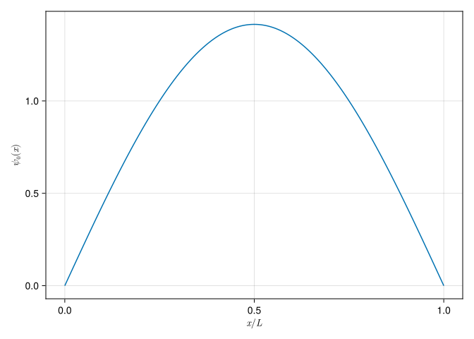
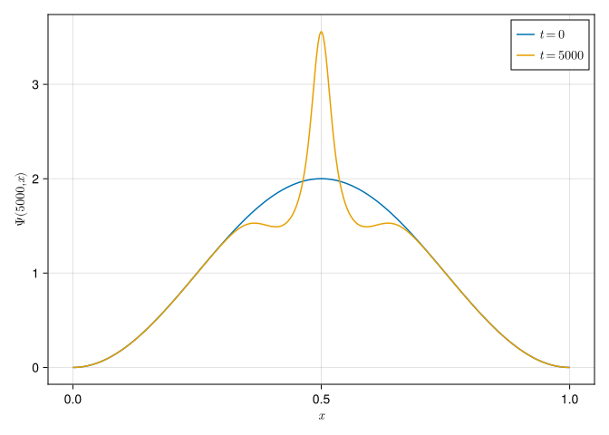

┌ Warning: Found `resolution` in the theme when creating a `Scene`. The `resolution` keyword for `Scene`s and `Figure`s has been deprecated. Use `Figure(; size = ...` or `Scene(; size = ...)` instead, which better reflects that this is a unitless size and not a pixel resolution. The key could also come from `set_theme!` calls or related theming functions.
└ @ Makie ~/.julia/packages/Makie/rEu75/src/scenes.jl:227
┌ Warning: Found `resolution` in the theme when creating a `Scene`. The `resolution` keyword for `Scene`s and `Figure`s has been deprecated. Use `Figure(; size = ...` or `Scene(; size = ...)` instead, which better reflects that this is a unitless size and not a pixel resolution. The key could also come from `set_theme!` calls or related theming functions.
└ @ Makie ~/.julia/packages/Makie/rEu75/src/scenes.jl:227

which is normalized to 1
\[
\int_0^1 |\psi_0(x)|^2 \mathrm{d}x = 1
\]
as can be confirmed numerically
sum(Ψ₀.^2* dx)
1.0000000000000002
Ψ =zeros(ComplexF64, nt, nx)Ψ[1,:] .= Ψ₀functionevolve!(psi)for t in1:(nt-1)for i in2:(nx-1) psi[t+1, i] = psi[t, i] +im/2* dt/dx^2* (psi[t, i+1] -2*psi[t, i] + psi[t, i-1]) -im*dt*V[i]*psi[t, i]end normal =sum(abs.(psi[t+1,:]).^2)*dxfor i in1:(nx-1) psi[t+1,i] = psi[t+1,i]/normalendendendevolve!(Ψ)
┌ Warning: Found `resolution` in the theme when creating a `Scene`. The `resolution` keyword for `Scene`s and `Figure`s has been deprecated. Use `Figure(; size = ...` or `Scene(; size = ...)` instead, which better reflects that this is a unitless size and not a pixel resolution. The key could also come from `set_theme!` calls or related theming functions.
└ @ Makie ~/.julia/packages/Makie/rEu75/src/scenes.jl:227

Solve using eigenstate evolution
The TDSE can also be solved using the eigenstate evolution. Here we first solve the time-independent Schrödinger equation (TISE),
To solve the TISE numerically, we can discretize the space and convert the differential equation into a matrix equation.
Divide the spatial domain into \(N\) points with spacing \(\Delta x\). Let \(x_i = x_0 + i\Delta x\) for \(i = 0, 1, 2, \ldots, N-1\).
Approximate the second derivative using the central difference method: \[
\frac{d^2 \psi}{dx^2} \bigg|_{x=x_i} \approx \frac{\psi(x_{i+1}) - 2\psi(x_i) + \psi(x_{i-1})}{(\Delta x)^2}
\]
We substitute this finite difference approximation into the Schrödinger equation